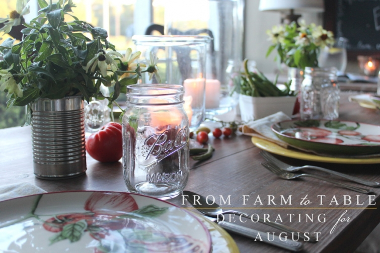
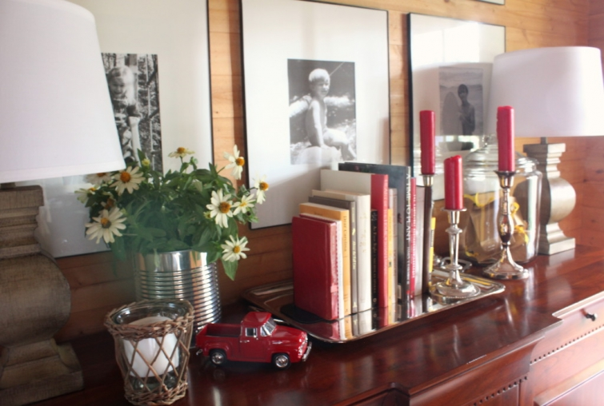
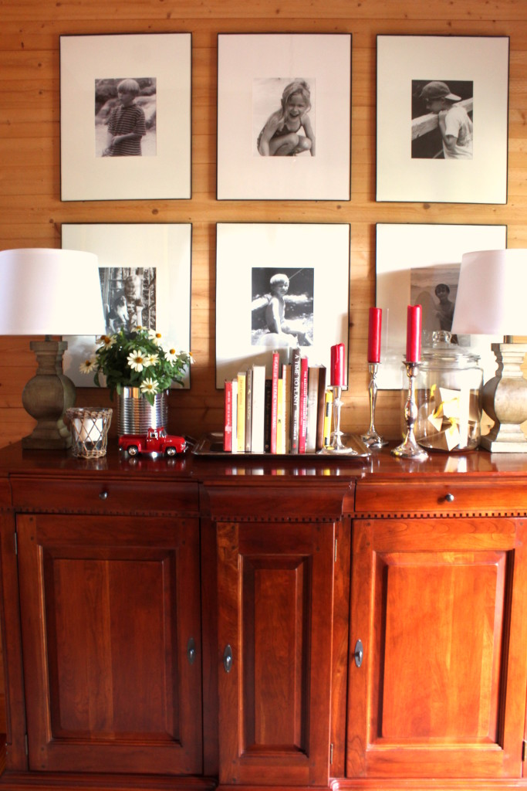

.png)
.PNG)
.PNG)
.PNG)
.PNG)
.PNG)
.JPG)
.JPG)
.PNG)
.PNG)


Yes, I know. It is almost the end of August, and I am just now getting around to showing you the decorating for this month. I apologize, but I wanted to do the giveaway this month, and those posts that went with it came first. Some of you are probably already looking at pumpkins and mums and don’t want to see anything else related to summer! 🙂
But summer marches on in full force here in Georgia. Full force with lots of vegetables! This decorating actually started in mid July when tomatoes were coming out of the gardens here by the bucketfuls. (Is bucketfuls really a word??)
I love heirloom tomatoes with their gorgeous range of colors from yellows to reds to even browns. (You can see that here.) So they were the inspiration for this month’s decor, and because I was using garden vegetables, I thought cans made a nice metal accent for my “vases”…
 with a few canning jars thrown in for good measure. 🙂
with a few canning jars thrown in for good measure. 🙂
A group of my teacher friends went together and gave me a very nice gift certificate to Pottery Barn when I retired in May. Pottery Barn gift cards can also be redeemed at pbkids, PBTeen, and Williams-Sonoma. So I had quite a few stores from which to choose!
I had spied these tomato plates in Williams Sonoma earlier in the summer. They are beautifully hand painted. I knew I wanted several sets of them; so I waited until they were on sale, and then I happily ordered them with my gift card (and I still have some money left on it to spend! 🙂 )
I mixed a couple of patterns of silver for the flatware, and mason jars just seemed like the perfect choice for our glasses for this farm to table setting.
I loved how the centerpiece with all the vegetables turned out! (Those cardboard berry baskets came from Hobby Lobby I think, but I am not 100% sure.)
I ordered the sets of plates in a couple of different patterns so that I could mix them. (You have to look closely to really be able to tell the difference in them.)
The red and yellow color scheme is also in the kitchen. The little stool there that had been blue earlier in the summer got painted with my wall paint.
Here’s the desk with a few canned vegetables from Fresh Market. Aren’t those labels just perfect for this? 🙂
And a recipe for tomato pie just had to go on the chalkboard. 🙂 Even Garden and Gun magazine went with a cover of tomatoes this month!
And finally, I want you to come out on the porch (even though it is hot as the devil out here!) There has been a domino move of furniture around here lately. Our daughter got the sofa from the playroom. The playroom got the wicker sofa from the porch, and the porch got the wicker loveseat from my classroom when I retired. Got all that? 🙂 My plans are to paint it the same color as all the other wicker out there when the weather cools off some, and I want to get the cushions recovered as well.
I used more of my new tomato plates out here too.
The fun chalkboard has vegetables listed all around the border. 🙂
Love love how this table turned out with the candles and more vegetables!
It is really tooooo hot to be out there in the day, but the early morning and late evening are nice with the fans on.
In my next post, I will share a meal with you that we enjoyed out there with all that tomato goodness (and maybe a recipe or two. 🙂 )
And one last reminder to enter the giveaway that ends tonight. You can read the details here. All you have to do is leave a comment on a post that publishes between 8/13/2015 and midnight 8/21/15. If you’re reading the post from an email delivered one, you will need to go to the actual website to leave a comment. www.talkofthehouse.com. Click on Leave a Comment. Then scroll to the last comment on the post to leave yours in the comment form. You can enter on all the posts in that date range if you want more chances to win. (Only one comment per post please.) The entry deadline is midnight Eastern time 8/21/15. I will do a random drawing and announce the winner in my next post.
Happy Friday! I hope you have a super weekend as we near the end of this summer season. I’m sorta ready for some fall temps around here….and maybe a few mums. 🙂 How ’bout you?
Until next time,


.PNG)
Love the tomatoe plates and your table decor. Also love the lamps on your table with the books, framing your family pics. Where did you find those?
Enjoy your blog!
Love, Love, Love the tomato plates and the beautiful tablescapes!! I have similar plates and am going to use your ideas for dinner this week! Thanks for sharing – I so enjoy your blog and your fun ideas!
Blessings,
Lanita
——————————————————————
I’m so glad there are ideas here that you can use Lanita! Thank you for putting my ideas to work! 🙂 I hope your tomato plates work for the meal.
Kelly
Cute and creative idea to use veggies for decoration! It’s always fun to see what you will come up with next.
Great decorations, Kelly, and I love the Williams-Sonoma plates!
Kelly,
Happy weekend! I love the tomato plates and of course, all of the red touches! We’re really still in summer mode so this post was perfectly timed. 🙂
I like all of the changes on the porch. The wicker love seat from your classroom looks happy there.
xo,
Karen
Kelly, I can never get enough posts about summer. I am not ready for mums and pumpkins yet. How sweet that your friends gave you a Pottery Barn gift card! You are spending it well. The tomato plates are fun. Do you like fried green tomatoes? They are one of my favorite things.
As always so fun, I am ready for cooler temps also. Have a great weekend.
Was so happy to see your post featuring farm to table dining. Your table settings are beautiful, fun and inviting. Keep the summer posts coming, I am not ready for mums or pumpkins!
Love Love how you place a decorative plate on a plain colored! I am watching for some perfect 3/4 plates for me. Good luck to me for the drawing. Thanks for all of your inspiration
Yikes, Kelly, where has Summer gone? I like how you have painted the stool in your kitchen which in turn reminds me that I have a bookcase, wicker shelf unit, and something else that I have conveniently forgotten, that all need to be painted before the hot weather leaves us. And those plates are great.
I believe it is considered more correct to say bucketsful though my spellcheck doesn’t agree. You have a slew of teachers to confer with; let us know what they conclude. Have a great weekend.
love the tomato plates also, and also your table set ups
Loving that tablescape! And with fall in the air, I too am ready to decorate with all the rich colors. I have a love affair with plates and the tomato plates are fun, fun!
Love the summer theme using fresh produce. The plates were a perfect choice.
Kelly, I just love this tablescape. I am loving those tomatoes plates!
Kelly, Beautiful post as always!I feel as if i’m right there enjoying your hospitality!What time is dinner?
love it all. i had my eye on those plates!
I, too, have a gift card from Pottery Barn in my wallet … will have to check out those gorgeous plates at Williams Sonoma … and that little red truck! Where did you find that beauty?
Thanks much for another very inspirational post, Kelly.
Monika
Kelly, You have a flair to make everything pretty. What a wonderful gift!
Janet
Love reading your website and would love to win the give-away.
Your decorating is so inspiring – love it !!!!
I love the tomato plates!I am always inspired by your decorating posts. Can’t wait to hear the recipes.
Like how you used the veggies!
Give a tutorial on painting the love seat when you paint, please.
Thanks for the tour.
Kelly,
I love your new tomato plates. I am not ready for Fall yet. We are still enjoying the Summer time weather here. It has been a very pleasant Summer here in Missouri this year. We have been making salsa from all of the tomatoes we have been getting out of our garden lately. I can’t wait to see what recipes you made. Have a great weekend!
Perfect theme for August! Tomatoes galore. I visited my grandparents yesterday and they had lots from their garden. We had BLT’s for lunch. :)I love the plates you chose.I’m sure you will get plenty of use from them. Can’t wait to see what “tomato” recipe you made! 🙂
Well I might be deathly allergic to tomatoes but I do believe that I want those tomato plates. I love those. I don’t think they would go in my kitchen. I have brown and turquoise. I would try to find a way. So cute!!! I always love reading your blog and look forward to seeing your next creation. Your the best!!!
Yet another table scape I love, absolutely love the tomatoes plates!
You can never have too many tomatoes! Looks fabulous!
I love the tomato plates.
Can almost smell those delicious tomatoes!! Where’s my salt shaker?! This is the time of tomato harvest– and I have canned many jars of juice and fruit to use during the winter. Hot, hard work but oh, so rewarding! My mother in law used to say “beats eating snowballs” coming from a family of 11 children! Last year my daughter got me the tomato smelling soy candle from WS and it was wonderful!
love the tomato plates!
Love your new dinner plates. I’ve been debating on getting some pumpkin plates I seen at pottery barn. Enjoy the rest of your summer
Vegges are my favorite. Could use some of those bucketful of tomatoes over here.
Wish you could toss me a few but it was great looking at yours.
It’s great to celebrate the fresh vegetables, especially tomatoes, of summer! And, I always enjoy seeing how you make it all come together.
I am not a fan of eating a tomato but I LOVE those plates. You did a super job on your tables…can I come over to eat?
Your table setting is beautiful and so appropriate for the last weeks of summer. As a fellow retired teacher I am so happy that you are now having a chance to relax with your family and share your fascinating creativity with your blog readers. I always look forward to your next post. Thanks for inspiring us!
Love the tablescapes. Made my mouth water looking at all the beautiful tomatoes. Thanks for such cheerful posts, look forward to hearing from you!
Love, love the plates! The table are so pretty, great inspiration!
The plates are lovely, and the farm veggies look great!
I have had my eye on the fabulous tomato plates! Love your style and willingness to share with all of us.
Love the veggie decor. Now I know what’s for supper………tomato pie!
Oh, your tomato dishes would be so fun to have! I love, love, love dishes and would be tempted to have tons if I had room to store them. Love your decorating as usual! Have a good weekend.
I especially love a farmhouse theme! The cans for vases idea was so simple and cute. I sure wish I had your knack to be able to write so well on a chalkboard! Good job, as always!
I feel certain you’re enjoying your retirement, but imagine it feels weird with school starting back and you’re not! Hope you’re feeling better, too. Enjoy the remaining lazy, hazy days of summer!
You had me at tomato! I am ready for the fall temperatures, but I guess as a former teacher, it’s in my blood to want summer to last a little longer. I love your summer decor, from the entry and the too cute little red truck (wherever did you find it?),to
the new dishes (envy!), all the table centerpieces (loved how you tucked in the radishes and okra too.) On a trip to Savannah, I found a couple of ceramic berry cartons. I have used them all summer. What a clever idea for your flower vases. It all came together perfectly. The new stool color blends well, and yes, the Fresh Market canned vegetables add just the right touch. The porch is pleasing perfection as always. The red plates inside and the yellow plates outside coordinate smartly with the tomato plates. The table looks inviting, well, the entire porch does for that matter. I am still in love with the chalkboard in your kitchen and the one on the porch. AND, Yes, we will take some more recipes. Looking forward to the post on your tomato goodness meal! Thanks, Kelly.
Sherry
I really like those tomato plates 🙂 Thank you for posting these decorating ideas – I starting my fall decorating (I’m in Florida) and it just seems out of place. I will re-do using some of your inspirations!
Happy weekend to you Kelly!
Love your porch!!!!
I have always liked using old cans and jars for flower vases. Love the plates and all your little touches as always.
So many wonderful ideas, Kelly! I love your flowers displayed in tin cans!! Such fun to see the red and yellow touches in your kitchen. I adore the beadboard back splash!! Love your beautiful chalkboards, too! What do you use to write on them? The retired teacher in me would love some small chalkboards at home to hand letter, but I don’t want chalk dust! My Pinterest boards are filling up with your great ideas!! ♡
Your table is delightful and I love the plates. I think we all want to come to your house for dinner!
Tomatoes, daisies and mason jars… these are a few of my favorite things. Although I do prefer autumn, I want to enjoy the last of summer and this post is inspirational, as usual.
Such a creative vegetable theme! Love the plates. I think it may be buckets full. But, then I was an apparel and textiles teacher, not English! As always, I thoroughly enjoyed this post.
Seriously, you never cease to amaze me at your creativeness. I simply love those tables with the tomato plates. Your chalkboards are adorable too… such talent. O look forward to your posts.
Never have I seen someone so creative. And when do you find the time to come up with all these beautiful decorations? Please keep it up because I love your style.
It is all so beautiful as always! Love it all.
Love those plates!!
Your pictures provide so much inspiration!
I am going to see if I can find those plates—perfect for August!
You really outdid yourself, Kelly, with your summer home!! I ADORE it all! Those plates are so much fun and I love all the bounty of summer with your veggies, zinnias and such. You are just so darned talented! Happy late summer to you!
Julie
Your tablescape and especially your tomato plates make me feel like I’m about to sit down to a meal at my grandmother’s table. Makes me remember smells from her humble kitchen that included fresh churned butter, fresh sliced tomatoes, okra, butter beans, chicken, gravy, biscuits and then a fresh pound cake for dessert. MMM!
What a warm and welcoming home!
I love the decorations. This morning I went outside early and cut daisies to put on my kitchen table. Now I’m tempted to go cut more.
Thanks for sharing!
I will say it endlessly….I love your porch! Your decorating is charming. Fun garden/tomato goodness! I bought the pumpkin print plates last fall. Ugh, after seeing this post, I think I might need the tomato ones now. 🙁 Does this mean I have plate addiction?
I love a pretty tablescape: they really don’t have to be incredibly expensive – yours are always so thoughtful & seem to be a nice mix of collected treasures, gifts from others, & bargain finds! What a wonderful way to bless those you love!! Dinner at the table is almost a lost art. Thanks so much for sharing & inspiring others to bless their family & friends.
I seem to love everything “tomato-y”…truly made up word…and following that reasoning I like your summer decorating. I have fond memories of helping my Dad in the garden when I was a child. He had a huge garden and every kind of vegetable that he knew my mother would cook or can. I loved every minute being with him. He was a really good man and a great father. Thank you for bringing him to mind with the theme.
I love those tomato plates! So cute. You’ve also made me hungy for a huge plate of veggies. I think I’ll do that tonight. Thank you!
Love your porch decorated with all the veggies.
This was such a fun, and appropriate, post! (We are buried under our garden tomatoes, right now 🙂 You made a wise choice with your gift card – those plates are beautiful! I’m sure that you will get a lot of use from them.
Love your blog. Would love to win a guest luncheon slot with 4 other lucky readers of Talk of the House.
I always enjoy your blog and your southern style. Keep ’em coming! and thanks!
What a charming farm to table post!! I love your new plates, and the way you have used them at your tables. Coming to dinner in your home must be such a treat for anyone who is invited……and always for your family! Thanks for all the inspiration!
Love the new plates. Your tables are always so beautiful. Hope you do share the recipes. Have a great weekend!!!!
Ooh I love those tomato plates!
I love love your decorating style. Hope your retirement is going well, your blog readers will undoubtedly reap the rewards!
I am new to your website and am enjoying everything that I have read! Love your farm to table post!
Cute plates! I love the summer decorating…but, fall is really my favorite! Quite the variety of tomatoes you had there…did they make a great salad? 😉
I love the plates, flowers and all the red and yellow!
Love the vegetable theme! I too have a porch and live in Georgia and enjoy early in the morning with my coffee and very late in the afternoon with my book. Yes, it has been hot as the devil and I am really looking forward to this cold front the weather folks keep talking about.
Love your tomato plates!
Love your porch
You are so creative, Kelly! I always want to duplicate everything you do. Now if I could only do calligraphy!😊
Love your new tomato plates!
I love your vegetable decorations! So original and fresh for the hot end to summer. Thank you for the chance to win the cookbook too.
I just love your new tomato plates and the summer/veggie table decorations!